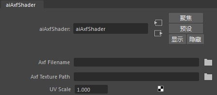
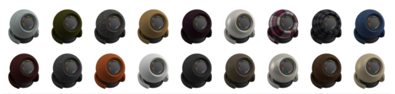
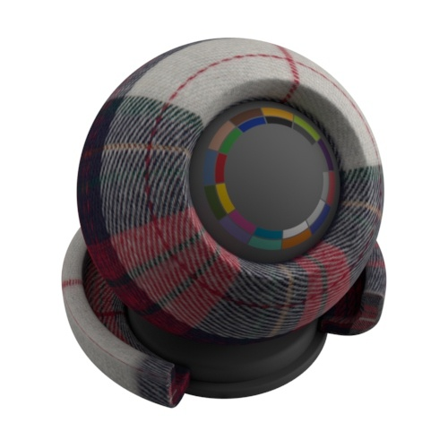
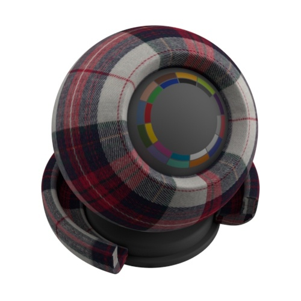
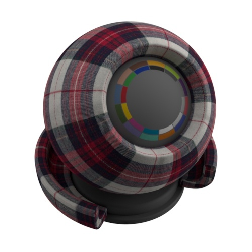

AXF 着色器可以导入到 Maya 中，以便通过 aiAxfShader 与 MtoA 结合使用。
如果几何体显示为粉红色，可能是因为着色器的路径不正确或当前不支持该特定的 .axf 文件（即汽车涂料）。

要应用于曲面的 .axf 文件的路径。
需要将从 axfFile 中提取的纹理放置于其中的目录。使用纹理路径在网络中进行渲染时，应慎重考虑。
控制如何围绕对象包裹纹理。值越大，纹理在对象曲面上的重复次数越多。
|  |  |  |
| 100 | 200 | 300 |
Xrite 的默认比例单位是米，而 Maya 的单位是厘米。因此，可能需要以 n*100 范围使用 UV 比例。